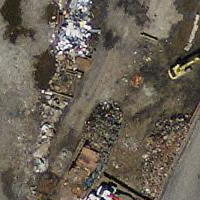
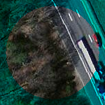
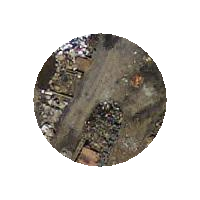

Name
ST_Clip — Returns the raster clipped by the input geometry. If no band is specified all bands are returned. If crop is not specified, true is assumed meaning
the output raster is cropped.
Synopsis
raster ST_Clip(raster rast, geometry geom, double precision[] nodataval=NULL, boolean crop=true);
raster ST_Clip(raster rast, geometry geom, boolean crop);
raster ST_Clip(raster rast, integer band, geometry geom, boolean crop);
Description
Returns a raster that is clipped by the input geometry geom. If no band is specified all bands are returned.
Rasters resulting from ST_Clip must have a nodata value assigned for areas clipped, one for each band. If none are provided and the input raster do not have a nodata value defined, nodata values of the resulting raster are set to ST_MinPossibleValue(ST_BandPixelType(rast, band)). When the number of nodata value in the array is smaller than the number of band, the last one in the array is used for the remaining bands. If the number of nodata value is greater than the number of band, the extra nodata values are ignored. All variants accepting an array of nodata values also accept a single value which will be assigned to each band.
If crop is not specified, true is assumed meaning the output raster is cropped to the intersection of the geomand rast extents. If crop is set to false, the new raster gets the same extent as rast.
Availability: 2.0.0
Examples here use Massachusetts aerial data available on MassGIS site MassGIS Aerial Orthos. Coordinates are in Massachusetts State Plane Meters.
Examples: 1 band clipping
-- Clip the first band of an aerial tile by a 20 meter buffer. SELECT ST_Clip(rast, 1, ST_Buffer(ST_Centroid(ST_Envelope(rast)),20) ) from aerials.boston WHERE rid = 4;
-- Demonstrate effect of crop on final dimensions of raster -- Note how final extent is clipped to that of the geometry -- if crop = true SELECT ST_XMax(ST_Envelope(ST_Clip(rast, 1, clipper, true))) As xmax_w_trim, ST_XMax(clipper) As xmax_clipper, ST_XMax(ST_Envelope(ST_Clip(rast, 1, clipper, false))) As xmax_wo_trim, ST_XMax(ST_Envelope(rast)) As xmax_rast_orig FROM (SELECT rast, ST_Buffer(ST_Centroid(ST_Envelope(rast)),6) As clipper FROM aerials.boston WHERE rid = 6) As foo; xmax_w_trim | xmax_clipper | xmax_wo_trim | xmax_rast_orig ------------------+------------------+------------------+------------------ 230657.436173996 | 230657.436173996 | 230666.436173996 | 230666.436173996
 Full raster tile before clipping |  After Clipping |
Examples: 1 band clipping with no crop and add back other bands unchanged
-- Same example as before, but we need to set crop to false to be able to use ST_AddBand -- because ST_AddBand requires all bands be the same Width and height SELECT ST_AddBand(ST_Clip(rast, 1, ST_Buffer(ST_Centroid(ST_Envelope(rast)),20),false ), ARRAY[ST_Band(rast,2),ST_Band(rast,3)] ) from aerials.boston WHERE rid = 6;
 Full raster tile before clipping |  After Clipping - surreal |
Examples: Clip all bands
-- Clip all bands of an aerial tile by a 20 meter buffer. -- Only difference is we don't specify a specific band to clip -- so all bands are clipped SELECT ST_Clip(rast, ST_Buffer(ST_Centroid(ST_Envelope(rast)), 20), false ) from aerials.boston WHERE rid = 4;
Full raster tile before clipping |  After Clipping |